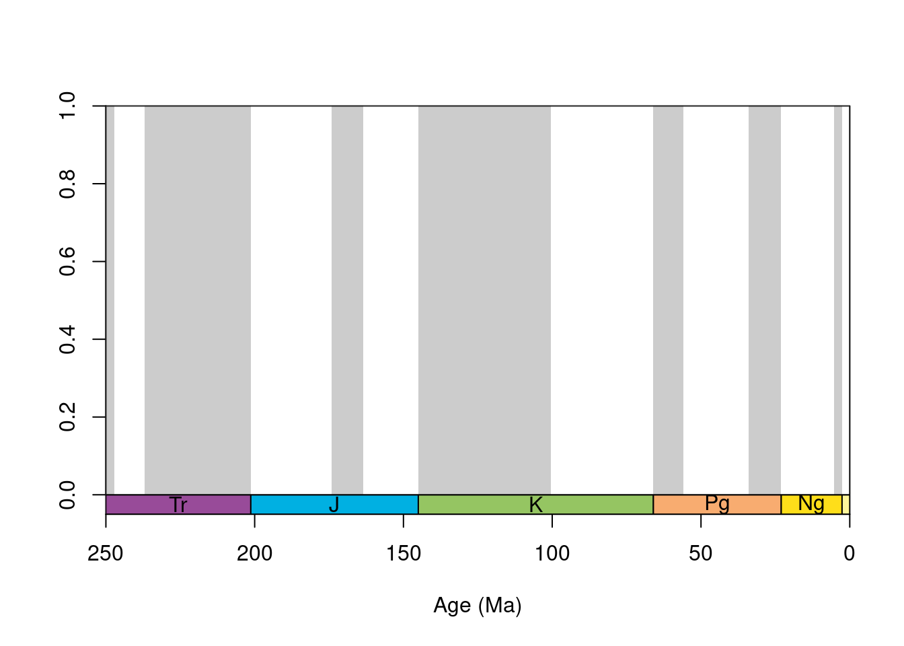
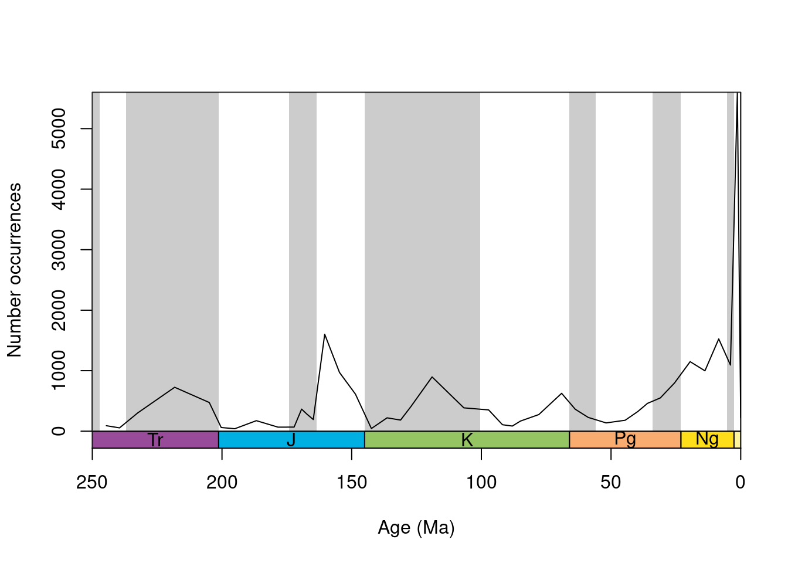

Overview
This tutorial is aimed to introduce the divDyn package and its applications to data from the fossil record. In particular, you will learn how to calculate taxonomic richness, extinction and origination rates from time‐binned fossil data using state‐of‐the‐art methodology. This tutorial requires some familiarity with the R programming environment and fossil data. But solutions will be displayed throughout the tutorial, so even without any background in R or fossil data, you can take away something from this.
The divDyn package
divDyn was created by Ádám Kocsis to ensure traceability, reproducibility and comparability of quantitative palaeobiological studies. To get a basic introduction to the package, please read the abstract of the paper The r package divDyn for quantifying diversity dynamics using fossil sampling data, which accompanies the package. I would even recommend to read the whole paper, as it is a magnificent guide to working with fossil data itself. After reading through the abstract, and skimming through the paper, can you answer the following questions? Note that some questions allow multiple selection.
divDyn basicsbinstat()
After familiarizing ourselves with the package, we are now ready to work with it. We can load the package with the library() call:
library(divDyn)The package itself has a built in dataset corals, which we can load with the data() function:
data(corals)We now have access to around 30,000 coral occurrences from the Paleobiology Database, with a number of other information attached.
str(corals)## 'data.frame': 29775 obs. of 35 variables:
## $ genus : chr "Thamnasteria" "Thecosmilia" "Thamnasteria" "Thecosmilia" ...
## $ collection_no : int 1559 1566 1566 1569 1612 1612 1612 1744 1834 1836 ...
## $ family : chr "Thamnasteriidae" "Montlivaltiidae" "Thamnasteriidae" "Montlivaltiidae" ...
## $ abund_value : chr "" "" "" "" ...
## $ abund_unit : chr "" "" "" "" ...
## $ reference_no : int 41 41 41 41 41 41 41 47 30659 47 ...
## $ life_habit : chr "intermediate-level epifaunal" "intermediate-level epifaunal" "intermediate-level epifaunal" "intermediate-level epifaunal" ...
## $ diet : chr "photosymbiotic" "photosymbiotic" "photosymbiotic" "photosymbiotic" ...
## $ country : chr "United Kingdom" "United Kingdom" "United Kingdom" "United Kingdom" ...
## $ geoplate : int 305 305 305 305 305 305 305 305 315 315 ...
## $ lat : num 50.8 50.8 50.8 50.8 50.6 ...
## $ lng : num -2.28 -2.28 -2.28 -2.28 -2.35 ...
## $ paleolat : num 41.4 41.4 41.4 41.4 41.3 ...
## $ paleolng : num 7.85 7.8 7.8 7.8 7.75 ...
## $ period : chr "Jurassic" "Jurassic" "Jurassic" "Jurassic" ...
## $ epoch : chr "Late/Upper Jurassic" "Late/Upper Jurassic" "Late/Upper Jurassic" "Late/Upper Jurassic" ...
## $ subepoch : chr "" "" "" "" ...
## $ stage : chr "Oxfordian" "Kimmeridgian" "Kimmeridgian" "Kimmeridgian" ...
## $ early_interval: chr "Oxfordian" "Kimmeridgian" "Kimmeridgian" "Kimmeridgian" ...
## $ late_interval : chr "" "" "" "" ...
## $ max_ma : num 164 157 157 157 157 ...
## $ min_ma : num 157 152 152 152 152 ...
## $ stg : num 67 68 68 68 68 68 68 74 75 74 ...
## $ ten : int 34 34 34 34 34 34 34 38 39 38 ...
## $ env : chr "nr" "nr" "nr" "nr" ...
## $ lith : chr "c" "c" "c" "s" ...
## $ latgroup : chr "nt" "nt" "nt" "nt" ...
## $ bath : chr "deep" "deep" "deep" "deep" ...
## $ gensp : chr "Thamnasteria sp." "Thecosmilia annularis" "Thamnasteria sp." "Thecosmilia annularis" ...
## $ ecology : chr "z" "z" "z" "z" ...
## $ ecologyMostZ : chr "z" "z" "z" "z" ...
## $ ecologyMostAZ : chr "z" "z" "z" "z" ...
## $ ecologyBoth : logi FALSE FALSE FALSE FALSE FALSE FALSE ...
## $ growth : chr "colonial" "colonial" "colonial" "colonial" ...
## $ integration : chr "3" "1" "3" "1" ...Note that the package provides a number of functions to clean raw fossil data, but these will not be covered in this tutorial. Instead, you can look at the blogpost written by Àdàm to see how to do this. All these steps are already done on the corals data set.
Now we are ready to run the first function. We can get an overview of sampling parameters by running the binstat() function, that calculates the occurrence, collection, and reference counts in a single line. This is the general use of the high-level function of the package: you state the occurrence data frame as the first, and then the column names as additional arguments. The column tax stands for the taxon names, bin for the discrete time bins, coll for collection identifiers and ref for reference identifiers.
bsFull <- binstat(
x = corals,
tax = "genus",
bin = "stg",
coll = "collection_no",
ref = "reference_no"
)## The database contains duplicate occurrences (multiple species/genus).The code above calculates sampling parameters for the data set corals on genus level using geologic stages from each collection using the respective reference. Can you change the call so that we calculate the parameters on family level, instead of genus level?
Hint: You might want to look up the column name in the coral data set, that specifies the family names. Just look at the call str(corals) above.
binstat(
x = corals,
tax = "genus",
bin = "stg",
coll = "collection_no",
ref = "reference_no"
) binstat(
x = corals,
tax = "family",
bin = "stg",
coll = "collection_no",
ref = "reference_no"
)The output of binstat() is organized such as the index of the values in the vector match up the bin identifier (e.g. the 60th value is for stg 60). The default setting of the function will output a message about duplicate occurrences. This warns us that there are collections with more than one genus entries in a collection (i.e. more than one species/genus). If you are interested in genus-level analyses, it is probably better to count these as one, which you can do with duplicates=FALSE option.
bs <- binstat(
x = corals,
tax = "genus",
bin = "stg",
coll = "collection_no",
ref = "reference_no",
duplicates=FALSE)Cool, we now calculated basic sampling summaries for our data set. We saved the summarries in a matrix called bs, which we will use for plotting in the next exercise.
tsplot()
Plotting these variables is probably better then just looking at the numbers. The package includes a powerful time-scale plotting function that lets you visualize how time is broken down to discrete intervals. But to use it, we first need to load the built-in stage data from divDyn.
data(stages)Now we can use tsplot to create our visualizations. This highly customizable function is built on the basic plot() function, and most of its arguments are inherited. The following function call will draw an empty plot within the past 250 million years, with series-level shading and system-level boxes at the bottom:
tsplot(stages, boxes="sys", boxes.col="systemCol",
shading="series", xlim=c(250, 0))
To get the correct y-axis dimensions, we can look up the maximum occurrence value of the bs data set:
max(bs$occs, na.rm = TRUE)## [1] 5592Then you can draw the number of occurrences with lines(). As the same row indices in the stages object and the result of binstat() indicate values that belong to the same interval, you do not need any subsetting to align our sampling summaries to the stage data. Note that we defined the y-axis limits from 0 to the maximum of occurrences
tsplot(
stages,
boxes = "sys",
boxes.col = "systemCol",
shading = "series",
xlim = c(250, 0),
ylim = c(0, 5600),
ylab = "Number occurrences"
)
lines(stages$mid, bs$occs)
So currently the series are shaded (every other series is highlighted in grey). Some people don’t like this look and would prefer no shades (i.e. a cleaner look). Can you find which argument call you have to remove from the tsplot() call.
tsplot(
stages,
boxes = "sys",
boxes.col = "systemCol",
shading = "series",
xlim = c(250, 0),
ylim = c(0, 5600),
ylab = "Number occurrences"
)
lines(stages$mid, bs$occs)tsplot(
stages,
boxes = "sys",
boxes.col = "systemCol",
xlim = c(250, 0),
ylim = c(0, 5600),
ylab = "Number occurrences"
)
lines(stages$mid, bs$occs)Videos
We can easily add a video to our file by embedding them in our rmarkdown file:
This will facilitate many of our tutorials as we can just link to a video on youtube or vimeo for a short introduction to the specific topic.
Images
The same holds for images and such. We can link to images hosted on our server or from the web:

Links
We can, of cause, link to all sources that are available on the web. For example, have you heared about this weird guy doing stats with extinct critters?
Code chunks
The greatest advantage of an interactive tutorial compared to a static html is that one can create exercises with direct evaluation. This is extremely customizable and powerfull (e.g. tutorials store the various pieces of work done within them such as exercise input and output, answers to questions, etc., and automatically restore it when users revisit them. Locally run tutorials store user work in the local filesystem and tutorials run from a server store user work within the storage provided by the end user’s web browser.).
The end user does not need to have R installed to run the code chunks.
Simple exercise
Here’s a simple exercise with an empty code chunk provided for entering the answer.
Write the R code required to multiply two with three:
Add a solution
We can add a hidden solution button to the exercise chunk.
Now multiply five with three:
5*3Add hints
We can give hints for code execution:
Now calculate three to the power of five:
Hint: The operator for an exponent in R is “^”. You can find all R operators here
Mulitple hints
Note that we can add multiple hints and open them successively:
Add two vectors, the first one range from 1:2, and the second one from 3:6.
# we can build vectors in R with calling c()
# e.g. this is the vector ranging from 1:2:
c(1:2)
# or
c(1,2)# to add vectors, we can use the plus operator. Note that R functions
# are vectorized and the length of the shorter vector is therefor recycled:
c(1:2) + c(3:6)Preset code
We can already set up some code in the chunks as well, and the user just needs to finish or modify it.
Modify the following code to limit the number of rows printed to 5 of the ‘mtcars’ data set:
mtcars# the head function will do the work for you
# note that head generally prints 6 rows
head(mtcars)# set the n argument to 5 to print only 5 rows
head(mtcars, n = 5)Quizzes
Quiz
We can include multiple choice questions and quizzes.
Answer the following questions to successfully finish the tutorial: